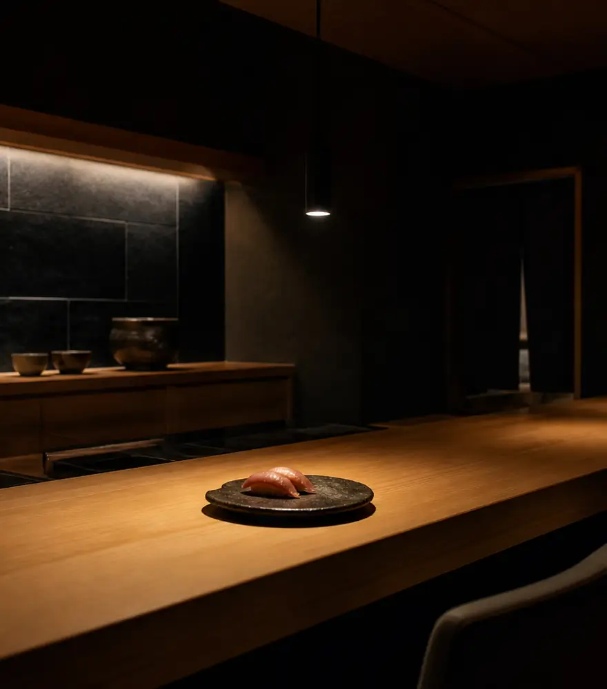
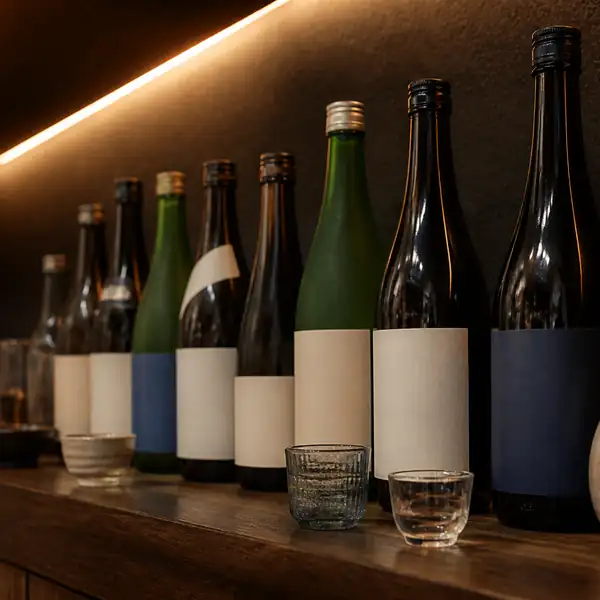
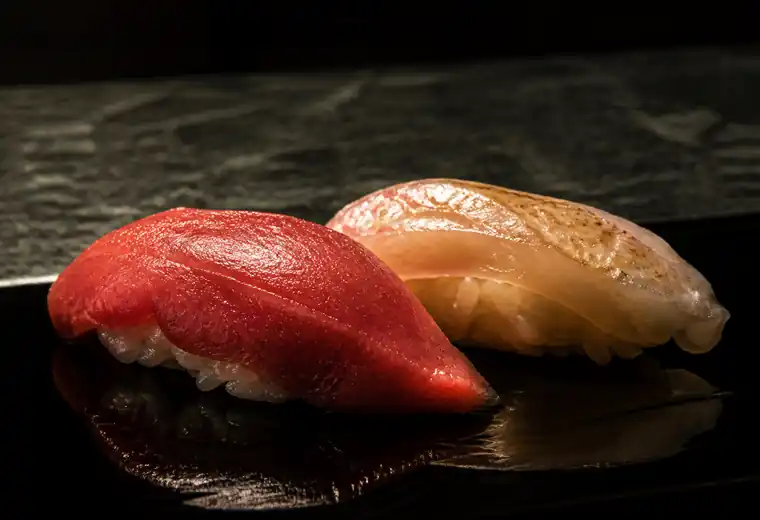
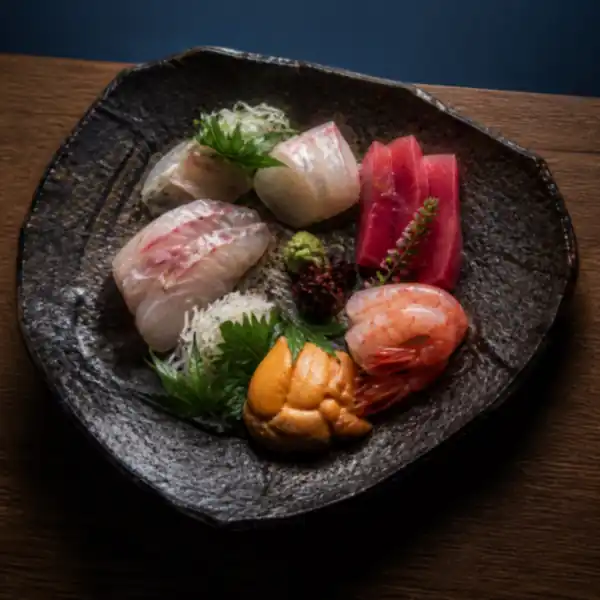
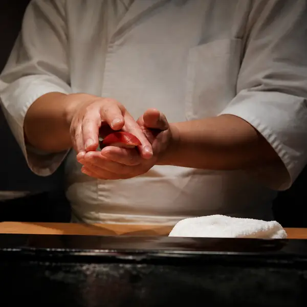
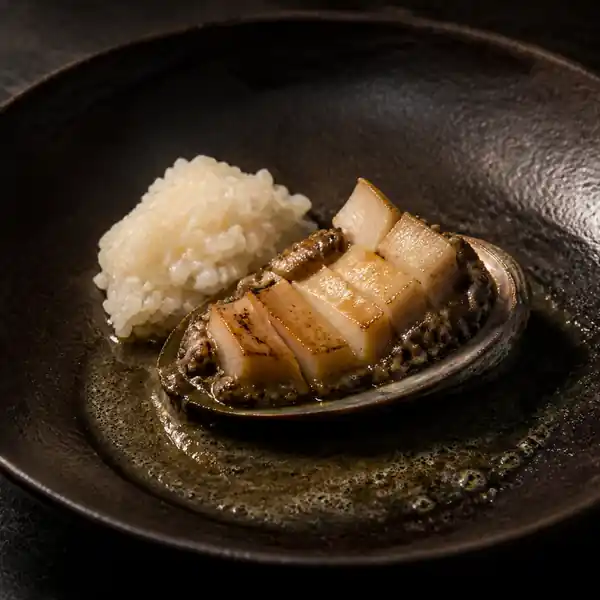
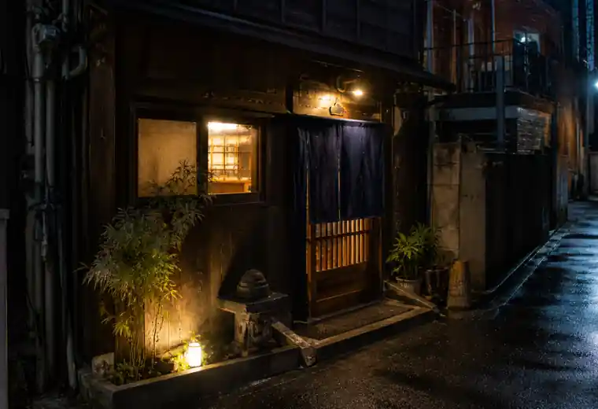
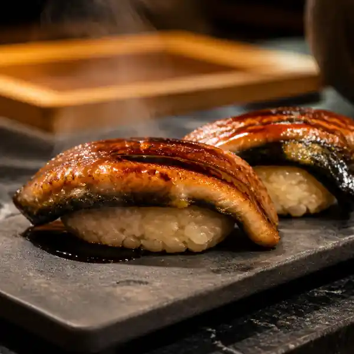
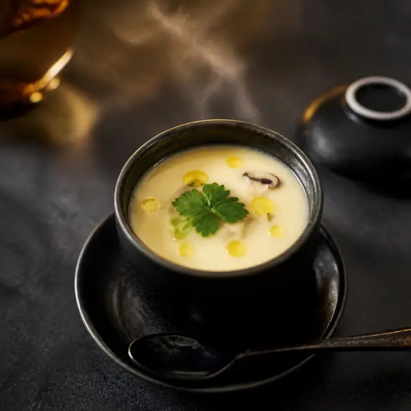

YANGJU OKJEONG · SUSHI OMAKASE
스시카무이
鮨 カムイ
노량진에서 그날 들어온 생선을 손질하고 숙성해,
다찌 열두 자리에서 한 점씩 드립니다.
재료 소진 시 조기 마감 · 방문 전 전화 권장
저녁 다섯 시, 문을 엽니다
01 — OMAKASE
그날의 재료로 정해지는 코스
숙성회로 시작해 초밥으로 이어지고, 전복술찜·장어초밥·직접 만든 카스테라로 마무리합니다. 가짓수와 구성은 그날 들어온 재료에 따라 달라집니다.
- 0135,000원
오마카세 35,000
처음 오셨을 때 가장 부담 없는 코스. 사시미와 초밥을 골고루.
- 0250,000원
오마카세 50,000가장 많이 선택
사시미 가짓수가 늘고 초밥이 넉넉해지는 코스. 배부르게 드실 수 있습니다.
- 0370,000원
오마카세 70,000
그날 가장 좋은 자리의 생선을 더 얹은 코스. 술을 곁들이기 좋습니다.
- 04문의
오마카세 100,000 이상
재료와 인원을 미리 말씀해 주시면 그에 맞춰 준비합니다.
가격은 매장 안내와 방문 후기 기준이며, 생선 시세에 따라 달라질 수 있습니다. 예약 시 확인해 주세요. 밥 양은 드시는 양에 맞춰 조절해 드립니다.

03 — SAKE
초밥에 맞춰 고르는 한 잔
가라구치(건조)와 아마구치(달콤) 표기를 참고해, 드시는 회에 맞춰 사케를 골라드립니다. 사케를 어려워하시면 소주·하이볼·무알콜 제로 라인업도 준비되어 있습니다.
주류 가격은 매장에서 안내합니다. 잔은 차갑게 준비해 드립니다.
04 — GALLERY
한 점, 한 접시
숙성회 · 초밥 · 전복술찜 · 장어 · 계란찜 · 사케 · 골목 입구.







위 이미지는 분위기 구현용 AI 예시 이미지이며, 실제 제작 시 매장 사진으로 교체됩니다.
05 — VISIT
예약과 오시는 길
영업시간
| 월–토 | 17:00 – 22:30 |
|---|---|
| 일요일 | 정기 휴무 |
재료가 소진되면 조기 마감합니다. 오시기 전에 전화 먼저 주세요.
지도 앱의 영업시간 표기가 실제와 다를 수 있습니다. 매장 기준은 일요일 휴무입니다.
오시는 길
경기 양주시 옥정동로5마길 10-10, 제1동 1층
옥정 R6 인근 주택가 골목 · 매장 앞 소수 주차(협소)